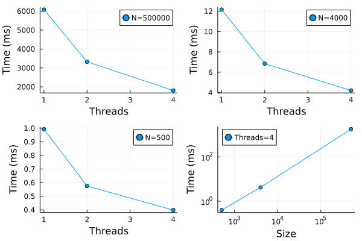
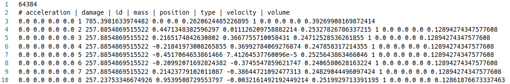
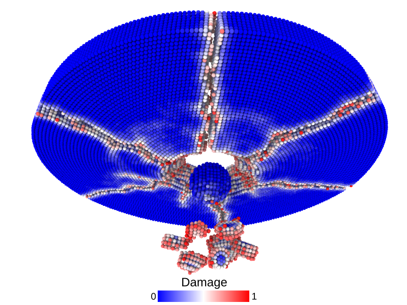

PeriDyn: Peridynamics Package Written in Julia
PeriDyn is a numerical simulation software designed to solve peridynamics problems. It is written in the Julia programming language, and offers a high level of flexibility and speed. PDBenchmark is built on top of the PeriDyn package, which provides a number of predefined material models and benchmark problems. This allows users to quickly set up and run simulations, and compare their results to established benchmarks. See Documentation.
Peridynamics is a nonlocal continuum theory that can describe material failure and fracture without using the traditional concepts of stress and strain. Instead, it models a material as a collection of particles that interact through pairwise forces. These forces depend on the separation between particles, and can be used to simulate a wide range of materials, including brittle and ductile solids, fluids, and granular materials.
PeriDyn Environment
PeriDyn provide Env struct to hold information regarding system state and other parameters. Env struct is passed to the run! (see) function along with solver (see) and other simulation parameters such as number of time steps, file write frequency, and neighbor update interval etc. The Env struct is shown below.
mutable struct GeneralEnv
id::Int64
type::AbstractArray{Int64,1}
bid::AbstractArray{Int64,1}
ghost_atoms::AbstractArray{Int64,1}
state::Int64
y::AbstractArray{Float64,2}
v::AbstractArray{Float64,2}
f::AbstractArray{Float64,2}
p::AbstractArray{Float64,2}
volume::AbstractArray{Float64,1}
intact0::AbstractArray{Int64, 1}
mass::AbstractArray{Float64,1}
time_step::Int64
dt::Float64
neighs::AbstractArray{Int64,2}
boundary_conditions::Any
short_range_repulsion::Any
material_blocks::Any
boundaries::Tuple
Collect!::Any
Params::Any
Out::Any
endIt is a mutable struct type and can be updated once created. Instead of default constructor, PeriDyn also provide Env(id::Int64, materials, short_range_repulsion, boundary_conds, dt; state=2, bskin=0.5) where id is environment id, materials is array of material blocks (see) , short_range_repulsion is array of contact models (see) , boundary_conds is array of boundary conditions (see) , and dt is time step. It calculates all the filelds of Env struct under the hood and create an object of type Env. Once Env is created, it can be updated as and when required.
Material Discretization
Peridynamics utilize material point grid to define a material block. Each material point have its properties such as position, velocity, acceleration, volume and density etc. To define such properties of material block, PeriDyn provide GeneralMaterial(y0, v0, x, volume, type, horizon; max_neigh=100, particle_size=0) (see) where y0 is initial deformed position, v0 is initial velocity, x is reference position, volume is volume, type is type of material and horizon is horizon as defined in peridynamics. To discretize a material block, users can use PDMaterialPoints.jl (https://github.com/ravinderbhattoo/PDMaterialPoints.jl) which will provide y0, v0, x, volume, type for GeneralMaterial. Users can also use seperate software to generate files for these inputs and directly load these files in Julia.
Material Models
In peridynamics, a material model defines the constitutive relationship of a material. These constitutive relationship dictates forces between material points on deformation. PeriDyn implements by holding information regarding material model with PeridynamicsMaterial(bid, gen, spc; name="PM") struct, where bid is block id, gen is general material, spc is specific material, and name is name of peridynamics material block. The GeneralMaterial struct holds the information which are common for all the peridynamics material models where as SpecificMaterial holds the information which are specific to constitute relationship of material. The GeneralMaterial struct is given below.
struct GeneralMaterial
y::Array{Float64,2}
velocity::Array{Float64,2}
x::Array{Float64,2}
volume::Array{Float64,1}
type::Array{Int64,1}
particle_size::Float64
horizon::Float64
family::Array{Int64,2}
intact::BitArray{2}
weighted_volume::Array{Float64,1}
deformed::Vector{Bool}
endPeriDyn also provide a GeneralMaterial(y0, v0, x, volume, type, horizon; max_neigh=100, particle_size=0) method which calculates some of the fields under the hood and return a object of type GeneralMaterial. An example of specific material model struct is given below.
struct BondBasedSpecific <: SpecificMaterial
bond_stiffness::Array{Float64,2}
critical_stretch::Array{Float64, 2}
density::Array{Float64, 1}
endHere, bond_stiffness is stiffness of bond as defined for micro-brittle-linear-elastic peridynamics material model, critical_stretch is critical stretch and density is density of material. BondBasedSpecific is a concrete subtype of SpecificMaterial which is an abstract type. A list of implemented SpecificMaterial is given below with their method signatures.
BondBasedSpecific(S, critical_stretch, density::Array{Float64, 1})ElastoPlasticSolidSpecific(bulk_modulus::Array{Float64,1}, shear_modulus::Array{Float64,1}, critical_stretch::Array{Float64,1}, density::Array{Float64,1}, sigma_y; criteria = VonMises())OrdinaryStateBasedSpecific(bulk_modulus::Array{Float64, 1}, shear_modulus::Array{Float64,1}, critical_stretch::Array{Float64,1}, density::Array{Float64,1})PairwiseNNSpecific(layers, critical_stretch, density::Array{Float64, 1}; act=Flux.relu)SkipSpecific()
Contact Models
In peridynamics simulation, repulsive interaction between two physical blocks is modeled through a contact model. A contact model defines the repulsive interaction between particles of two physical blocks as well as the repulsive interaction between the particles of the same block which are not connected through peridynamics bond. To model such interactions, PeriDyn offers abstract type RepulsionModel11 and RepulsionModel12. Here, RepulsionModel11 model interaction between the particles of same block and RepulsionModel12 model interaction between the particles of different blocks. PeriDyn package implements the following contact models.
LJRepulsionModel
It defines the LJ interactions between the particles of peridynamics material blocks using an expression \(F(r) = \frac{dV}{dr}\) where \(V(r) = 4\epsilon((\frac{\sigma}{r})^{12} - (\frac{\sigma}{r})^6)\).
NonLinearRepulsionModel
It uses non-linear spring equation as \(F(r) = K r^n\) where \(K\) is spring constant and \(n\) is exponent.
LinearRepulsionModel
It is a special case of NonLinearRepulsionModel where exponent is set to 1.
All contact models can be defined as ModelName(args..., mat1::PM, mat2::PM; distanceX = 5, max_neighs = 200) for inter-block interaction and ModelName(args..., mat1::PM; distanceX = 5, max_neighs = 200) for intra-block interactions. Here, the lookup distance (distanceX) for neighbors is set to a default value of 5 \(\times\) the particle size and maximum number of neighbors max_neighs is set to a default value of 200.
To calculate the repulsive force using theses contact model, we use repulsion_force(dr, RepMod::RepulsionModel) where dr is distance between particles and RepMod is repulsion model defined for the particles.
The package also offers short_range_repulsion!(y, f, type, bid, vol, RM) which will mutate the force vector (f) of a given peridynamics environment by adding the repulsive forces. Here, y is updated position of particles, f is force vector, bid is block-id, vol is volume of particles and RM is repulsion model.
Boundary Conditions
To impose external conditions such as constant strain rate, fix boundary, fixed force value and initial projectile velocity – the PeriDyn package use boundary conditions. Here, we define two abstract types BoundaryCondition and BoundaryConditionat0. The boundary condition BoundaryConditionat0 is applied only at start so that we can set some of the system values such as initial projectile velocity. The boundary condition BoundaryCondition is applied throughout the whole simulation. All the boundary conditions are concrete subtypes of one of the two abstract boundary conditions. To apply boundary condition during simulation, we use apply_bc!(env, BC::T, ::Type{Val{:position}}) where T <: BoundaryCondition function inside a solver. The solver will apply all boundary conditions in order after each system state update. Note that since it is applied sequentially, a latter boundary condition can override a former boundary condition. A boundary condition is defined as a struct with at least the following fields.
struct BoundaryCondition
bool::Array{Bool, 1}
last::Array{Float64, 2}
onlyatstart::Bool
xF::Function
vF::Function
...
endHere, bool defines the boolean array for particle ids where the boundary condition will be applied. last is used to hold the previous state of the particles usually positions. onlyatstart is used for solvers which perform iterations other than the for time evolution. xF function is applied on positions and vF function is applied on velocities when boundary condition is applied. Some of the implemented boundary conditions are as follows:
FixBC(bool; onlyatstart = false)FixBCwill fix the particle positions from the initial frame. Here, only argument is a boolean array of particle ids and keyword argument is used as described above. It can be used to fix an end of a bar.ToFroBC(bool, rate, freq; applyafter = 0, onlyatstart = false)Given a velocity rate and frequency,
ToFroBCwill perform a to and fro motion for the particles. We can also delay the operation by settingapplyafterto some desired frame. It can be used to apply a strain rate or constant velocity.MoveBC(bool, rate; kwargs...)MoveBCis a special case of to and fro boundary condition where the frequency is set to infinite explicitly by callingToFroBC(bool, rate, Inf; kwargs...). Therefore, it will move the particles at a given rate in a particular direction.DeltaScaleBC(bool, scale, fixpoint; onlyatstart = false)DeltaScaleBCscales the material points about a fixed point. It can be used for quasi-static simulation where we look for the equilibrium position of the system. It is often easier to achieve equilibrium faster from a scaled system state.
Solvers
The PeriDyn package provides two abstract type for solvers, a) QuasiStaticSolver for quasi-static simulations and b) DynamicSolver for dynamic simulations. It implements QSDrag(step_size, drag; max_iter = 100, x_tol = 1.0e-6, f_tol = 1.0e-6), here step_size is size of step in gradient descent optimiser and drag is for viscous damping, as a quasi-static solver which iteratively solves for position with equilibrium i.e. net force on all particles should be zero. All solvers <: QuasiStaticSolver are suppose to have three parameters a) max_iter, the maximum number of iteration for finding solutuion for position, b) x_tol, the tolerance for change in position and c) f_tol, the tolerance for net force on particles. For dynamic simulation, PeriDyn provides DSVelocityVerlet() which perform standard velocity-verlet algorithm for time evolution of system. All dynamic solver implementations should be subtype of DynamicSolver and all quasi-static solver implementations should be subtype of QuasiStaticSolver. An apply_solver! function must be defined for all solvers (see) .
Simulation
To run a simulation with environments (see) , PeriDyn provide run! function. The run!(envs, N::Int64, solver; filewrite_freq::Int64 = 10, neigh_update_freq::Int64 = 1, average_prop_freq::Int64 = 1, out_dir::String = "datafile", start_at::Int64 = 0, write_from::Int = 0, ext::Symbol = :jld, max_part = 30) function take, envs (array of environment), N (number of time steps), and solver (solver) as arguments with other keyword arguments. The function performs a loop with N time and updates the system state for all the environments. The run! function mutates the state of envs, and we get an array of updated environments. The simulate!(args...; out_dir="datafile", append_date=true, kwargs...) function also provide similar functionality and it is wrapper over run! function. The run! function calls apply_solver!(apply_solver!(env, solver)) function where solver is a subtype of Union{QuasiStaticSolver, DynamicSolver}. Each solver must define apply_solver! function, which implements the solver over environment variables. The apply_solver! mutates the state of the given environment.
Parallel Computing
In peridynamics, for a given system state, the force calculation is per-particle basis and is independent of the forces on other particles. Therefore, parallel operations can be used to calculate the per-particle force. The force function force_density_T of material models uses map on the out loop and mapreduce on the inner loop during the force density calculation. The map and mapreduce are standard functions of Julia which perform operation in parallel. By default, Julia runs with four threads which can be override by executing julia -t num_threads for interactive session and julia -t num_threads filename.jl for running scripts. The PeriDyn package also uses Threads package for multi-threading of for loops in functions such as cal_family! (calculates the family members within the horizon), update_repulsive_neighs! (which updates the neighbors for the contact as defined in section (see) and weighted_volume. The performance of parallel operations for family calculation is shown in Figure 1 . The tests were performed with three systems with the number of particles 500000, 4000, and 500. As shown in Figure 1 a, b, c – the time taken to compute decreases with the number of threads available for parallel operations. We also plot the time taken vs the size of the system for four threads in Figure 1 . It show linear scaling for \(log(T)\) vs \(log(N)\) where \(T\) is the time and \(N\) is system size. The number shown in the figure may vary depending on the system hardware and other parameters.

Input/Output
The package offers saving of file as text as well as binary using JLD julia package. The write_data(filename; kwargs...) functions is default function for writing simulation trajectories on the disk. It uses file extension as hint and fall back to an appropriate write function. It supports jld and data as valid file extensions. In case of an invalid file extensions, it defaults to jld data format without changing the given file extension. The solver function saves id, type, position, velocity, acceleration, mass, volume and damage to the disk using the write_data(filename; kwargs...) by providing keyword arguments. The default function to write jld files is save function from LJD julia package. It uses save(filename, items...) where items are the data-fields as provided in solver function. In case of data files, write_ovito(filename::String; kwargs...) is the default function which writes Ovito compatible text files according to its data file extension. It is advisable to write jld files during the simulation as writing jld file is much faster as compared to writing data file specially for larger file sizes. The package also provides functions to covert jld files to data files for visualization in Ovito 1.10 . The jld2ovito(filename::String) writes a new data file with data extensions appended to the given filename. To convert multiple jld files we can use jld2ovito(file, N; start = 0, step = 100) where file is string with a wildcard * for e.g. env_step_*.jld. The function will loop, with local variable i, from start to N with step step and replace the wildcard with i.
Visualization
Visualizing the simulation results of physical system is key to access the validity of the simulations. It also provides insights in the physical phenomenon happening during the simulation. As mentioned in the section (see), PeriDyn simulation files can be converted to Ovito compatible data files for visualization (see Figure 3). It is a text file with per particle information of the system. The write_ovito(filename::String; kwargs...) can be used to write files to insert custom data for visualization after preprocessing. The file structure for the data file is shown in Figure 2. Here, line number 1 show the total number of particles in the system, line number 2 show the column names for the data (note that some data column are grouped together under on name for e.g. position will have 3 columns), and remaining lines shows the data values.


Benchmarking PeriDyn models
To validate the existing models and PeriDyn, we perform test simulations for tensile loading (displacement controlled), flexure loading (displacement controlled), wave propagation (impulse load) and collision of separate material blocks. We compare simulation result with theoretical value qualitatively. Material block is also visualized at different stage of simulation.
Tensile simulation
Bar under tensile load (displacement controlled)
A bar with length 7.2, cross-section 4\(\times\)4 and resolution 0.1 is stretched using both ends of bar. The simulation is performed with a)BondBasedSpecificand b)OrdinaryStateBasedSpecific` material models as shown in Figure 5. Figure 4 shows the time evolution of damage. List of relevant parameters with arbitrary units are given in the table.
| Parameter | Value |
|---|---|
| Length | 7.2 |
| Width | 4.0 |
| Height | 4.0 |
| Resolution | 0.1 |
| Poison’s ratio | 0.25 |
| E (Young’s modulus) | 200.0 |
| K (bulk modulus) | 133.33 |
| G (shear modulus) | 80.0 |
| Density | 2000.0 |
| Critical stretch | 0.01 |
| Horizon | 3\(\times\)Resolution = 0.3 |
| Time step | 0.158 |
| Bond stiffness | \(\frac{18K}{\pi \times Horizon^4}\) = 94314.0 |
As shown in Figure 5, the Young’s modulus from simulation is close to the given Young’s modulus.
| Material model | Actual | Simulation |
|---|---|---|
BondBasedSpecific |
200.0 | 190.1 |
OrdinaryStateBasedSpecific |
200.0 | 210.5 |
Flexure simulation
Bar under flexure loading (displacement controlled)
A bar with length 12.4, cross-section 2.0$$2.0 and resolution 0.2 is fixed at both ends and both ends are moved in lateral direction to induce flexure load. The simulation is performed with BondBasedSpecific material model as shown in Figure 7. Figure 6 shows the time evolution of damage. List of relevant parameters with arbitrary units are given in Table [tab:chap7_exam_fle].
| Parameter | Value |
|---|---|
| Length | 12.4 |
| Width | 2.0 |
| Height | 2.0 |
| Resolution | 0.2 |
| Poison’s ratio | 0.25 |
| E (Young’s modulus) | 200.0 |
| K (bulk modulus) | 133.33 |
| G (shear modulus) | 80.0 |
| Density | 2000.0 |
| Critical stretch | 0.01 |
| Horizon | 3\(\times\)Resolution = 0.6 |
| Time step | 0.632 |
| Bond stiffness | \(\frac{18K}{\pi \times Horizon^4}\) = 5894.6 |
| Flexure stiffness | \(\frac{12EI}{L^4}\) = 1.67 |
As shown in Figure 7, the flexural stiffness from simulation is close to the calculated theoretical value.
| Material model | Actual | Simulation |
|---|---|---|
BondBasedSpecific |
1.67 | 1.78 |
Wave propagation simulation
Pressure wave propagation (impulse loading)
A bar with length 21.2, cross-section 2.0$$2.0 and resolution 0.1 is fixed at left end and right end was given initial momentum to induce impulse load. The simulation is performed with BondBasedSpecific material model as shown in Figure 9. Figure 8 shows the time evolution of normal stress along the length of bar. List of relevant parameters with arbitrary units are given in Table [tab:chap7_exam_imp] .
| Parameter | Value |
|---|---|
| Length | 21.2 |
| Width | 2.0 |
| Height | 2.0 |
| Resolution | 0.1 |
| Poison’s ratio | 0.25 |
| E (Young’s modulus) | 20.0 |
| K (bulk modulus) | 13.33 |
| G (shear modulus) | 8.0 |
| Density | 2000.0 |
| Critical stretch | 0.01 |
| Horizon | 3\(\times\)Resolution = 0.3 |
| Time step | 1.0 |
| Bond stiffness | 9431.4 |
| Wave velocity | 0.1 |
As shown in Figure 9, the wave velocity from simulation is close to the calculated theoretical value. Time taken by wave to reach the other end is 195$$0.1 = 195.0, therefore wave velocity \(\frac{L}{\Delta t}\)= 21.2/195.0 = 0.108.
| Material model | Actual | Simulation |
|---|---|---|
BondBasedSpecific |
0.100 | 0.108 |
Impact simulation
Impact (collision of separate blocks)
A disk with radius 25.0, thickness 4.0 and resolution 0.5 is is hit by a projectile. The simulation is performed with BondBasedSpecific material model as shown in Figure 11. Figure 10 shows the time evolution of damage. List of relevant parameters with arbitrary units are given in the table.
| Parameter | Value |
|---|---|
| Disk radius | 25.0 |
| Disk thickness | 4.0 |
| Disk resolution | 0.5 |
| Projectile radius | 3.0 |
| Projectile resolution | 0.5 |
| Poison’s ratio | 0.25 |
| E (Young’s modulus) | 2000.0 |
| K (bulk modulus) | 1333.3 |
| G (shear modulus) | 800.0 |
| Disk density | 2000.0 |
| Projectile density | 20000.0 |
| Disk critical stretch | 0.01 |
| Projectile critical stretch | 0.1 |
| Horizon | 3\(\times\)Resolution = 1.5 |
| Time step | 0.5 |
| Bond stiffness | \(\frac{18K}{\pi \times Horizon^4}\) = 1509.0 |
Table: Parameters for simulating an impact of a projectile on a disk.
Machine learned constitutive relationship
Peridynamics simulation with bond based material
# Tensile simulation
# importing packages
using PDBenchmark
using PeriDyn
using Random
using BSON
using Flux
Random.seed!(42)
# setting paramters
const Es = 70.0
const nu = 0.25 # for bond based peridynamics
K = Es/3/(1-2nu)
G = Es/2/(1+nu)
const rho = 2.2 # g/cm3
wv = sqrt(Es/rho)
println("Wave velocity: ", wv)
const cs = 0.1
const reso = 0.1
const horizon = 3.0*reso
time_step = 0.5 * reso / wv
C = 18K/(pi*horizon^4)
# define material block
gen_mat = PDBenchmark.NameParam(:GeneralMaterial, (horizon), Dict(:max_neigh=>150, :skip_bb=>true))
spc_mat = PDBenchmark.NameParam(:BondBasedSpecific, ([C], [cs], [rho], ), Dict(:func=>(s, C) -> C*s))
# define solver
solver = DSVelocityVerlet()
# setup and clean output directory
out_dir = "MLTensileBarBBNL_" * string(typeof(solver))
try
foreach(rm, filter(endswith(".data"), readdir("./output/"*out_dir, join=true)))
catch
nothing
end
# perform simulation
test = PDBenchmark.TensileBar(;gen_mat=gen_mat, dt=time_step,
spc_mat=spc_mat, resolution=reso, solver=solver, Steps=1000, out_dir=out_dir, fwf=10, makeplot=true, trueE=Es)
env, solver, solvef! = PDBenchmark.stage!(test)
solvef!(env, solver)Machine leanring with PeriDyn
# importing packages
using PeriDyn
using Random
using Flux
using BSON
using Zygote
using PDMaterialPoints
Random.seed!(2020)
# adding some zygote rules (not necessary for the task every time)
using Zygote
function add!(a::Nothing, b::Zygote.Grads)
b
end
function add!(a::Zygote.Grads, b::Zygote.Grads)
for p in a.params
a[p] .= a[p] .+ b[p]
end
a
end
function div!(a::Zygote.Grads, i::T) where T <: Real
for p in a.params
a[p] ./= i
end
a
end
function mul!(a::Zygote.Grads, i::T) where T <: Real
for p in a.params
a[p] .*= i
end
a
end
# parameters for simulation
const Es = 70.0
const nu = 0.25 # for bond based peridynamics
K = Es/3/(1-2nu)
G = Es/2/(1+nu)
const rho = 2.2 # g/cm3
wv = sqrt(Es/rho)
println("Wave velocity: ", wv)
const cs = 0.1
const reso = 0.1
const horizon = 3.0*reso
time_step = 0.5 * reso / wv
C = 18K/(pi*horizon^4)
# read data from simulation
Out = PeriDyn.jld2array("./output/$(out_dir)/env_1_step_*.jld", 1000; start=0, step=10)
# defien material models
x = Out[1][:position]
vol = Out[1][:volume]
type = Out[1][:type]
out = x, 0*x, x, vol, type
gen_mat = GeneralMaterial(out..., horizon; max_neigh=150, skip_bb=true)
squareplus(x) = 0.5*(x + sqrt(x^2 + 4))
nn_spc_mat = PairwiseNNSpecific([1, 10, 10, 1], [cs], [rho]; act=squareplus)
nn_mat = PeridynamicsMaterial(deepcopy(gen_mat), nn_spc_mat)
# edit default NN model
model = Chain(Dense(1, 10, leakyrelu), Dense(10, 10, leakyrelu), Dense(10, 1, leakyrelu), x->1000*x)
nn_mat.specific.NNs[1, 1] = model
# loss function
function loss(kk)
Ns = Zygote.@ignore get_Ns()
data = Out[kk][:acceleration] ./ density
sum((data - force_density_T(Out[kk][:position], nn_mat; particles=Ns)).^2)
end
# optimiser
ps = Flux.params(nn_mat.specific.NNs[1, 1])
opt = Flux.Adam()
Ns = [1]
function get_Ns()
Ns
end
# Training
for i in 1:10000
if (i%10==0 | i==1)
Ns = rand(1:size(y, 2), 10)
nns = rand(1:100, 2)
end
gs = div!(reduce(add!, ((kk) -> Flux.gradient(()->loss(kk), ps)).(nns)), length(nns))
Flux.update!(opt, ps, gs)
println("$i, $(reduce(+, loss.(nns))/length(nns))")
# save model every 100 iteration
if i%100==0
BSON.@save "mymodel.bson" model
end
endPeridynamics simulation with machine learned material
# Tensile simulation with machine learned material
# importing packages
using PDBenchmark
using PeriDyn
using Random
using BSON
using Flux
Random.seed!(42)
# setting paramters
const Es = 70.0
const nu = 0.25 # for bond based peridynamics
K = Es/3/(1-2nu)
G = Es/2/(1+nu)
const rho = 2.2 # g/cm3
wv = sqrt(Es/rho)
println("Wave velocity: ", wv)
const cs = 0.1
const reso = 0.1
const horizon = 3.0*reso
time_step = 0.5 * reso / wv
C = 18K/(pi*horizon^4)
# define material block
gen_mat = PDBenchmark.NameParam(:GeneralMaterial, (horizon), Dict(:max_neigh=>150, :skip_bb=>true))
squareplus(x) = 0.5*(x + sqrt(x^2 + 4))
spc_mat = PDBenchmark.NameParam(:PairwiseNNSpecific, ([1, 10, 10, 1], [cs], [rho]), Dict(:act=>squareplus))
# define solver
solver = DSVelocityVerlet()
# setup and clean output directory
out_dir = "MLTensileBarBBNL_" * string(typeof(solver))
try
foreach(rm, filter(endswith(".data"), readdir("./output/"*out_dir, join=true)))
catch
nothing
end
# perform simulation
test = PDBenchmark.TensileBar(;gen_mat=gen_mat, dt=time_step,
spc_mat=spc_mat, resolution=reso, solver=solver, Steps=1000, out_dir=out_dir, fwf=10, makeplot=true, trueE=Es)
env, solver, solvef! = PDBenchmark.stage!(test)
BSON.@load "mymodel.bson" model
env.material_blocks[1].specific.NNs[1, 1] = model
solvef!(env, solver)